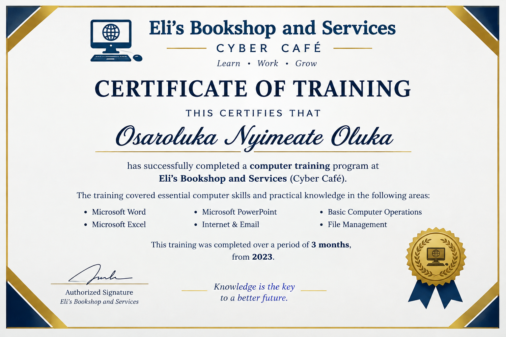

Computer Science Student | Cybersecurity Enthusiast
My name is Osaroluka Nyimeate Oluka, and I am a 300-level Computer Science student with a growing passion for technology and cybersecurity. I am interested in understanding how computer systems work, protecting digital information, and learning how to identify and prevent cyber threats. I am continuously developing my programming and technical skills while exploring different areas of Computer Science. My goal is to build a strong career in cybersecurity and contribute to creating safer and more secure digital environments.
A Python-based cybersecurity project that checks password strength by testing password length, uppercase letters, numbers, and special characters.
Technology used: Python
Source Code: View on GitHub
A responsive website designed to educate users about basic cybersecurity practices and online safety.
Topics covered include password security, phishing awareness, safe browsing, and device security.
Technologies used: HTML and CSS
Live Project: View Live Project
A Python-based cybersecurity tool that checks common network ports on the local computer and identifies whether they are open or closed.
Technology used: Python
The tool was tested on the local computer using localhost (127.0.0.1).
Source Code: View on GitHub
I am currently a 300-level Computer Science student at Bayelsa Medical University. I am developing my knowledge and practical skills in computer science, with a growing interest in cybersecurity and technology.
I completed a 3-month Computer Training Program at Eli's Bookshop and Services (Cyber Café) in 2023. The training helped me develop practical computer skills, including Microsoft Word, Microsoft Excel, Microsoft PowerPoint, Internet and Email, Basic Computer Operations, and File Management.
I am continuing to develop my technical and cybersecurity skills through academic studies, personal projects, and practical learning.

This certificate recognizes my successful completion of a three-month computer skills program in 2023.
I am open to connecting with other students, developers, and cybersecurity enthusiasts.
Email: osarolukanyimeate@gmail.com
LinkedIn: View my LinkedIn Profile